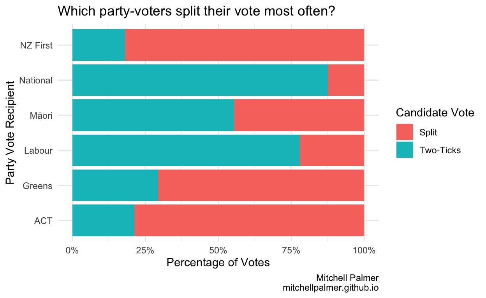
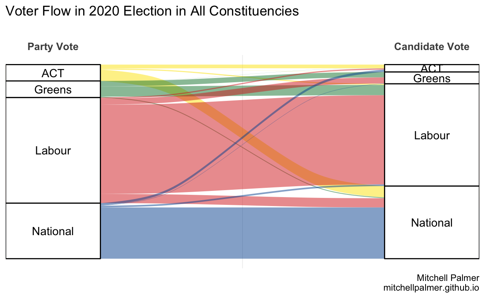
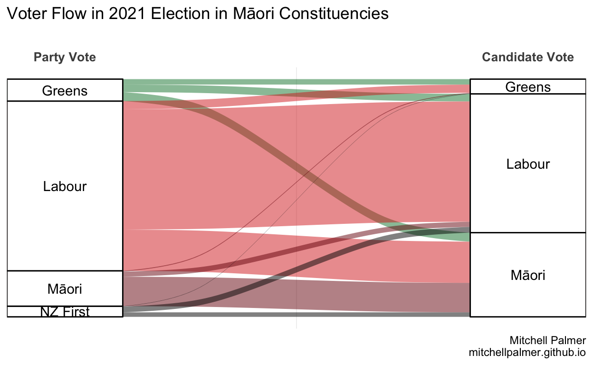
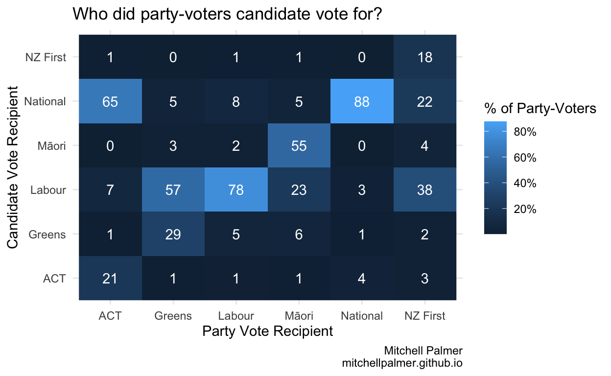
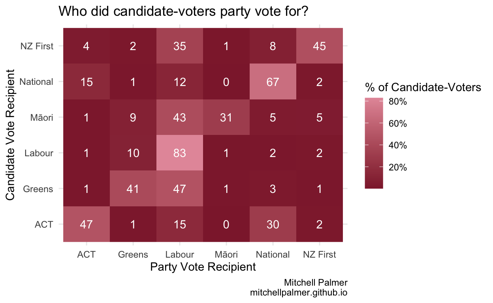

A brief compilation of split vote data from the 2020 election.
Continuing my series of election data posts from last year, in this post, I provide some graphs, showing which voters made use of the split vote in MMP last election.
Correction: In the initial verison of this post, the text and titles of graphs referenced the (non-existent) 2021 general election, rather than the 2020 election, as intended. This was helpfully pointed out by Maksym Polyakov on Twitter. My thanks to him. It has now been corrected.
One of the innovations which MMP introduced to New Zealand was the split vote. Under MMP, every voter gets two votes. His first vote – which determines (for most purposes) the make-up of Parliament and, therefore, which parties will be included in the next Government – is the ‘party vote’. That vote is cast for a registered political party and its pre-published list of candidates, not any specific individual. His second vote is the candidate/personal/electorate vote and determines which Member of Parliament will represent his region in Parliament. That vote is cast for an individual, but most candidates have a party affiliation which is listed under their name on the ballot paper. If a voter picks a candidate for his candidate vote from a party which is different to the party he voted for in the party vote, he is said to have cast a split vote. If a voter votes for the same party in both votes, he is said to have cast a “two-ticks” vote.
In this post, I investigate the trends in the split vote reports from the 2020 election, as released by the Electoral Commission on their excellent ElectionResults.govt.nz website, which contains data for every New Zealand election in the MMP era.
Split votes are not uncommon, but neither are they standard practice. Of the 2,907,801 votes cast in the last election, 928,039 or 32% were split votes. However, the rates of split voting vary signifcantly by the party for which the voter casts his party vote.

As one might expect, the people who most often split their votes are those who vote for parties which do not actively campaign for the electorate vote in most areas. Interestingly, Labour party-voters split their votes at a much higher rate than National party-voters. Let see where the split-voters from the parties choose to reallocate their votes.
This is the most convenient representation of this data but – due to formatting contraints – it includes only the four largest parties.

If we restrict ourselves to the Māori constituencies and exclude ACT and National – neither of which are in the top four party-vote recipients in the Māori constituencies – and include the Māori Party and NZ First, this is what the voter flow looks like:

These next graphs display a slightly broader group of parties, but do so at the cost of easy comprehensibility. To read the below graph, look first as the x-axis which tells you who the voter party-voted for, then look at the y-axis which is who they candidate-voted for. The numbers in white represent the % of the total party votes of the party on the x-axis which the party on the y-axis took as candidate votes. For instance, the 65% in the (ACT, National) box shows that 65% of ACT party-voters cast their electorate votes for National. The ACT column sums to roughly 95%, meaning that roughly 95% of ACT party-voters cast candidate votes for one of the six parties which were in either this or the previous Parliament.

The below graph shows the opposite – i.e., the percentage of people who candidate-voted for one party (still on the y-axis) which party-voted for each other party (still on the x-axis). E.g., the 15% in the (ACT, National) box means that 15% of National candidate-voters party-voted for ACT. The National row sums to 97%, meaning that 97% of National candidate-voters cast their party votes for one of the six displayed parties.

Now, let’s see which electorates split their votes most often. In this exercise, I’m including only those who cast party votes in each electorate as the demoninator. Those who cast candidate votes but did not cast party votes might be considered to have split their votes by some definitions, but including them makes the computation more difficult for little reward.
You can click on each electorate name to see a graph of that electorate’s voter flow. The only parties shown in each graph are the parties which recieved more than 1,000 party votes in that electorate.
| Electorate | % of votes split | Vote Flow Graph |
|---|---|---|
| Epsom | 55.58 | PDF PNG |
| Tāmaki Makaurau | 52.00 | PDF PNG |
| Te Tai Tokerau | 49.69 | PDF PNG |
| Te Tai Tonga | 47.09 | PDF PNG |
| Waiariki | 45.16 | PDF PNG |
| Te Tai Hauāuru | 44.82 | PDF PNG |
| Port Waikato | 42.39 | PDF PNG |
| Ikaroa-Rāwhiti | 41.80 | PDF PNG |
| Hauraki-Waikato | 39.29 | PDF PNG |
| Wellington Central | 38.80 | PDF PNG |
| Auckland Central | 37.01 | PDF PNG |
| Nelson | 36.08 | PDF PNG |
| Maungakiekie | 35.98 | PDF PNG |
| Dunedin | 35.89 | PDF PNG |
| Hutt South | 35.27 | PDF PNG |
| Rongotai | 35.18 | PDF PNG |
| Mt Albert | 34.92 | PDF PNG |
| Ōhāriu | 34.46 | PDF PNG |
| Northland | 33.91 | PDF PNG |
| Tāmaki | 33.55 | PDF PNG |
| Banks Peninsula | 33.44 | PDF PNG |
| Pakuranga | 33.37 | PDF PNG |
| Whangārei | 33.04 | PDF PNG |
| East Coast Bays | 33.01 | PDF PNG |
| Kaipara ki Mahurangi | 32.74 | PDF PNG |
| West Coast-Tasman | 32.72 | PDF PNG |
| Rangitīkei | 32.51 | PDF PNG |
| Ilam | 32.36 | PDF PNG |
| North Shore | 32.19 | PDF PNG |
| Northcote | 32.15 | PDF PNG |
| Taupō | 31.96 | PDF PNG |
| Waitaki | 31.78 | PDF PNG |
| Waimakariri | 31.65 | PDF PNG |
| Kaikōura | 31.63 | PDF PNG |
| Whangaparāoa | 31.59 | PDF PNG |
| Rotorua | 31.39 | PDF PNG |
| Hamilton East | 30.74 | PDF PNG |
| Ōtaki | 30.47 | PDF PNG |
| Southland | 30.38 | PDF PNG |
| Taranaki-King Country | 30.32 | PDF PNG |
| Coromandel | 30.14 | PDF PNG |
| Christchurch Central | 30.11 | PDF PNG |
| Selwyn | 30.10 | PDF PNG |
| Tukituki | 29.83 | PDF PNG |
| Tauranga | 29.74 | PDF PNG |
| Bay of Plenty | 29.67 | PDF PNG |
| Mana | 28.86 | PDF PNG |
| Botany | 28.84 | PDF PNG |
| Hamilton West | 28.68 | PDF PNG |
| Papakura | 28.51 | PDF PNG |
| Waikato | 28.51 | PDF PNG |
| Palmerston North | 28.48 | PDF PNG |
| Upper Harbour | 28.42 | PDF PNG |
| Invercargill | 28.40 | PDF PNG |
| New Plymouth | 28.24 | PDF PNG |
| New Lynn | 28.15 | PDF PNG |
| Napier | 28.13 | PDF PNG |
| Wairarapa | 28.10 | PDF PNG |
| Te Atatū | 27.61 | PDF PNG |
| East Coast | 27.55 | PDF PNG |
| Whanganui | 27.39 | PDF PNG |
| Christchurch East | 27.15 | PDF PNG |
| Wigram | 26.86 | PDF PNG |
| Mt Roskill | 26.45 | PDF PNG |
| Kelston | 25.46 | PDF PNG |
| Taieri | 25.09 | PDF PNG |
| Remutaka | 25.08 | PDF PNG |
| Takanini | 23.33 | PDF PNG |
| Panmure-Ōtāhuhu | 22.75 | PDF PNG |
| Rangitata | 22.59 | PDF PNG |
| Māngere | 22.47 | PDF PNG |
| Manurewa | 21.69 | PDF PNG |
The constituencies at the top of this list will be unsurprising to those who followed the election. Epsom has long been New Zealand’s most prominent example of tactical voting. There, right-wing voters – including those who otherwise vote National – choose (and are encouraged by the right-wing parties) to candidate vote for the ACT candidate to maximise the chance of a right-wing government and to ensure that ACT returns to Parliament whether or not it exceeds the 5% threshold. Similarly, the Māori Party made a concerted effort to campaign primarily for the candidate vote in the Māori constituencies, which encouraged otherwise-Labour voters to give them their candidate votes.
I plan to extend this analysis over time, but please enjoy it for now and let me know if there is anything specific you’d like to see.
If you see mistakes or want to suggest changes, please create an issue on the source repository.
{kind=link}
{kind=link}
{kind=link}
{kind=link}
{kind=link}
{kind=link}
{kind=link}
{kind=link}
{kind=link}
{kind=link}
{kind=link}
{kind=link}
{kind=link}
{kind=link}
{kind=link}
{kind=link}
{kind=link}
{kind=link}
{kind=link}
{kind=link}
{kind=link}
{kind=link}
{kind=link}
{kind=link}
{kind=link}
{kind=link}
{kind=link}
{kind=link}
{kind=link}
{kind=link}
{kind=link}
{kind=link}
{kind=link}
{kind=link}
{kind=link}
{kind=link}
{kind=link}
{kind=link}
{kind=link}
{kind=link}
{kind=link}
{kind=link}
{kind=link}
{kind=link}
{kind=link}
{kind=link}
{kind=link}
{kind=link}
{kind=link}
{kind=link}
{kind=link}
{kind=link}
{kind=link}
{kind=link}
{kind=link}
{kind=link}
{kind=link}
{kind=link}
{kind=link}
{kind=link}
{kind=link}
{kind=link}
{kind=link}
{kind=link}
{kind=link}
{kind=link}
{kind=link}
{kind=link}
{kind=link}
{kind=link}
{kind=link}
{kind=link}